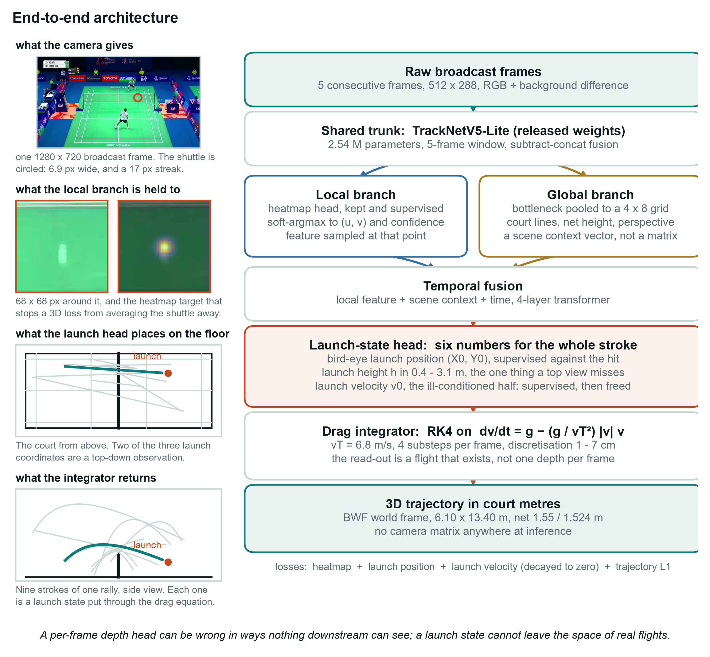

TrackNet3D: Direct End-to-End Monocular 3D Shuttlecock Trajectories from Broadcast Video
Paper 2 of 2 · Project page · 2026 · work in progress
Abstract
Recovering continuous 3D world trajectories of fast sports projectiles directly from raw broadcast video, without offline camera calibration, has been blocked by one thing: no synchronised 3D ground truth exists for realistic broadcast footage. The standard answer is a multi-stage pipeline — detect the target in 2D, calibrate the camera from the court lines, fit a geometric motion model — which accumulates error, needs a calibration step per video, and discards the image the moment the tracker reduces a frame to a coordinate pair.
We present TrackNet3D, an end-to-end model that predicts metric 3D shuttlecock coordinates directly from sequential raw broadcast frames, with no camera matrix at inference. It is made possible by the physics-grounded sim-to-real engine of paper 1, which supplies aerodynamically verified pseudo-ground-truth on real tournament footage. To handle the scale asymmetry between a roughly 6.9-px shuttlecock and the whole court, TrackNet3D uses a dual-branch backbone: a local branch that keeps the target's 2D centre under explicit heatmap supervision, and a global branch that pools coarse spatial context, where the painted lines, the net and the service-box perspective implicitly encode the camera.
The backbone is TrackNetV5-Lite — 2.54M parameters, F1 98.06 at 4 px — chosen over the 11.3M TrackNetV4 for a reason specific to this problem: the supervision is a few thousand windows from a handful of venues, so the smaller trunk is the one that can be fitted without memorising them.
Evaluated per stroke on the same held-out real strokes as the two-stage pipeline, TrackNet3D places the end of a stroke to 0.97 m median against 1.05 m for the calibrated lifter and 3.03 m for a MonoTrack-style per-shot fit — it matches a pipeline that is given the camera, without being given one. It is behind on physical plausibility (79.1% of strokes clear the net against 85.1%) and on the launch end of the stroke, and it runs at 497 frames/s on one GPU.
Two limits are measured and stated rather than smoothed over. On matches never trained on, net clearance falls to 73.9%, so generalisation across venues is real but incomplete; and ten distinct cameras is not enough to demonstrate implicit calibration, which makes raising that number the work in progress.
- Direct video-to-3D without runtime calibration. Output coordinates live in the fixed BWF court frame. Because the court is a specification rather than a scene, the world frame needs no calibration to define — only to recover, which is what the global branch is asked to do.
- Supervision that did not previously exist. Real broadcast frames paired with metric 3D, produced by the sim-to-real loop of paper 1 and filtered by physics: 4,741 labelled frames over 177 strokes, in 10 clips from 8 matches, with frames the tracker missed filled from the fitted flight rather than interpolated.
- An evaluation that separates implicit calibration from memorisation. Every result is split into strokes held out inside training venues and whole matches never seen. Only the second can distinguish a model that reads perspective from one that has learned where the shuttle usually is at each venue, and it is the split the checkpoint is selected on.
1. Introduction
Automated 3D trajectory tracking transforms broadcasting, officiating and quantitative biomechanics. Mapping raw broadcast pixels to metric 3D has nevertheless remained out of reach. In tennis, table tennis and football, monocular systems are multi-stage: 2D detection by a heatmap network, camera calibration by planar homography, then lifting by physics fitting or a sequence model. That decoupling has three failure modes.
Errors cascade. A tracker miss at impact, or a court line mistaken for the projectile, propagates into the downstream optimisation with no mechanism for the later stage to question the earlier one.
Calibration is mandatory at runtime. Geometric lifting needs intrinsics and extrinsics. On feeds with pan-tilt-zoom drift or non-standard vantage points, continuous line detection fails and the lifter is inoperable.
Compressing a frame to a coordinate discards evidence. Reducing an image to (u, v) throws away the motion-blur streak, which records the shuttle's displacement during the exposure — a velocity measurement inside a single frame, and precisely the quantity that is missing where the trajectory is least observable.
Why has an end-to-end network not simply been trained on raw video? The obstacle is the 3D ground-truth barrier: broadcast matches carry no motion-capture rig, and purely synthetic rendering leaves a visual domain gap that is severe exactly for the subtle motion artefacts a visual backbone would need. Paper 1 removes that obstacle by producing physically verified 3D trajectories registered to real broadcast frames. This paper is what that data makes possible.
2. Related work
2D projectile tracking. Tracking small, fast objects in low-resolution video was reframed by TrackNet, which replaced bounding-box regression with Gaussian heatmap prediction across consecutive frames; later versions added temporal aggregation and context fusion, and WASB introduced bidirectional temporal refinement. These reach high precision in pixel space and are indifferent to depth. We take one of them as the backbone rather than as a preprocessing stage.
Monocular 3D sports reconstruction. One line fits per-shot physics (MonoTrack for badminton, TT3D for table tennis), minimising 2D reprojection residuals under a drag model; these fail when the trajectory aligns with the optical axis. A second line trains sequence models on simulated trajectories (SynthNet, Uplifting Table Tennis, TT4D). Both require a pre-calibrated camera and operate on 2D coordinates. TrackNet3D removes the intermediate coordinate stage.
Motion blur as signal. Blur is conventionally treated as degradation to be removed. BlurBall showed for table tennis that a streak carries an integrated velocity vector. Where the spatial arc degenerates to a straight line, that is the only instantaneous velocity evidence in the frame. Our own measurement adds a caveat that shapes the design: the streak-length-to-image-speed slope varies 8.8× across the broadcasts we examined, so the cue is self-calibrating per video rather than a fixed constant.
TrackNet, AVSS 2019 · TrackNetV3, MMAsia 2023 · WASB, BMVC 2023 · MonoTrack, CVPRW 2022 · TT3D, CVPRW 2025 · Uplifting Table Tennis, WACV 2026 · BlurBall, CVPRW 2026
3. Architecture

3.1 Problem statement
Given a sequence of broadcast frames, TrackNet3D learns a direct map
where Pt is the shuttle position in the BWF court frame (6.10 × 13.40 m, floor at Z = 0, net at Y = 6.70 m) and ℋt is an auxiliary 2D confidence heatmap. No camera matrix appears anywhere in ℱθ.
3.2 Backbone
The trunk is TrackNetV5-Lite, loaded with its released weights and fine-tuned. Its size matters here for a reason beyond throughput.
| backbone | parameters | sequence | F1 at 4 px | result on this task |
|---|---|---|---|---|
| TrackNetV4 (expV9) | 11.3 M | 8 frames | 97.99 | did not beat a constant-depth baseline |
| TrackNetV5-Lite | 2.54 M | 5 frames | 98.06 | beats both mean-position baselines |
Both were run on the same labels. The larger trunk with a ray-depth head plateaued above the trivial baseline that predicts a constant depth; the smaller trunk with the dual-branch head is below both mean-position baselines on every split. With a few thousand supervised windows, capacity is not the constraint — fit is.
3.3 Local branch: keeping a 6.9-px target
A 3D regression loss over a whole frame has an easy minimum: predict where the shuttle usually is. The original heatmap head is therefore kept with its supervision, so the trunk is still required to find the shuttle, and the 3D head reads a feature sampled by bilinear interpolation at the heatmap's soft-argmax:
Sampling at a point rather than pooling globally is the difference between a feature that describes the shuttle and one in which a 6.9-px object contributes almost nothing.
3.4 Global branch: implicit calibration
The bottleneck feature map is pooled to a coarse 4 × 8 grid and projected to a context vector:
The pooling is spatial on purpose. What encodes the camera is where the court lines converge and how tall the net stands in the frame, and a global average would destroy exactly that. The vector is added to every frame's token before temporal fusion, so the depth read-out is conditioned on the view.
3.5 Temporal fusion
Per-frame tokens combine the local feature, the normalised 2D position, the detection confidence and time, and are added to the scene context before a four-layer transformer encoder. The head as implemented emits court metres directly, one position per frame, initialised at the court centre so training begins from a defined, harmless state:
Predicting each frame independently is what makes the next section necessary: nothing in this form ties consecutive positions together, so the output can be geometrically consistent with the image and still be a flight that could not happen.
3.6 Physically constrained read-out
The free head above is what the model currently trains with, and it has a failure mode worth stating precisely, because it is the reason the read-out is being changed. The evidence comes from the two-stage lifter of paper 1, which uses the same per-frame formulation and can be measured against 11,802 held-out synthetic strokes with known 3D truth.
The error is not spread out; it is a small number of discrete failures. RMSE 0.596 m sits against a per-stroke median of 0.276 m, because the worst 1% of strokes carry 31.5% of the squared error and the worst 5% carry 56.1%. Nothing continuous explains which strokes those are — arc length, depth, along-ray alignment, speed, peak height and span all give |ρ| ≤ 0.20 against the true error. They separate instead into two kinds, isolated by fitting one scalar depth rescaling per stroke:
| failure | share of the worst 1% | what it looks like | does rescaling fix it |
|---|---|---|---|
| depth level | 65 of 118 | correct shape, translated along the viewing ray | yes — 2.65 m → 0.40 m |
| depth reversal | 53 of 118 | corr(depth predicted, depth true) = −0.95: the shuttle recedes, the model says it approaches | no — 2.96 m remains |
Reversals are 2.3% of all strokes and carry 26.8% of the squared error, at RMSE 2.27 m against 0.53 m for the rest. They concentrate in the strokes played near the net over a short arc — net kill 15.6%, net shot 7.2% — and fall to 0.5% for clears.
Nothing at inference time sees them. Depth along the viewing ray is invisible in 2D by construction, so a reversed reconstruction reprojects onto the observations exactly. It is also just as smooth, just as physically plausible by every test we could compute without truth, and just as contained inside the hall: rejecting the 10% of strokes with the largest residual of the equation of motion removes 15.5% of the squared error, against 67.5% for an oracle that rejects the truly worst and 10% for rejecting at random.
But physics does decide the question — the model simply never gets to use it. Reflecting a true depth profile about its own mean produces a trajectory with identical viewing rays, and therefore an identical 2D projection: the reversed solution in its cleanest form. Its residual of the equation of motion is 59.2 m/s² against 0.00 for the truth, and 0.0% of 11,802 strokes fall below 5 m/s². Gravity is an absolute acceleration and it fixes the depth scale without exception. What buries that signal is the head's own frame-to-frame jitter: its output sits at 66.2 m/s² when the stroke came out right and 68.9 m/s² when it came out reversed — indistinguishable. A soft physics penalty cannot repair this, because a per-frame head cannot reach zero residual; it can only trade data fit for smoothness, and the finite-difference floor is itself stroke-dependent, near zero for a net shot and 200 m/s² for a drive at 30 fps.
So the constraint moves into the parameterisation. The head emits a launch state and the trajectory is produced by integrating the equation of motion, which makes the residual zero by construction and leaves the network choosing only among flights that exist:
The two halves of that launch state are not equally hard, and the split matters for how each is trained. The equation of motion has no dependence on position, so the launch point is a pure additive offset — verified exact to 1.5 × 10−14 m on this integrator — and its gradient is perfectly conditioned however many integration steps follow. The launch velocity is the ill-conditioned half, since its influence on the trajectory grows with elapsed time. It is therefore supervised directly for the first 60% of training, against exact values recovered by running the generator's own two-point solver on the stored trajectories (residual median 0.0000 m, 100% below 0.05 m), and released afterwards so the model finishes trained end to end through the integrator.
The launch position is a bird's-eye observation. Where on the floor a stroke was played from is exactly what a top-down view of the court shows, and it is what pins the depth level that the arc alone cannot. What a top-down view cannot say is how high the racket met the shuttle, so a single launch degree of freedom is left free, over the 0.40–3.10 m the labels span. On the two-stage lifter, supplying that position as an input — with ground noise added at training and test alike, because a real pipeline recovers it from a player detector rather than an annotation — has a measured effect that is about reliability rather than precision:
| launch position known to | RMSE | median | gross failure > 1 m | reversed | worst stroke |
|---|---|---|---|---|---|
| not given | 0.596 | 0.276 | 5.02% | 2.25% | 7.18 m |
| shuffled — same input, no information | 0.579 | 0.279 | 5.26% | 2.29% | 6.53 m |
| ± 2.00 m | 0.550 | 0.270 | 4.56% | 1.69% | 6.61 m |
| ± 0.75 m — what a player detector gives | 0.509 | 0.248 | 3.18% | 1.09% | 7.24 m |
| ± 0.25 m | 0.421 | 0.199 | 2.29% | 0.42% | 4.56 m |
The shuffled row is the control that makes the rest readable: an anchor drawn from a different stroke has the same input width and the same distribution of court positions but no information about this stroke, and it changes nothing. What the real anchor buys is a halving of the gross-failure rate and a fivefold reduction in reversals, while ordinary precision barely moves — with failures above 1 m removed, the median error goes from 0.263 m to 0.194 m. It helps most exactly where the failures are: net kill 22.6% → 4.8%, defensive drive 22.5% → 4.2%, clear 3.7% → 2.4%.
One thing it does not fix. The end of the stroke is off by more than 2 m in 1.89% of strokes without the anchor and still 1.27% with it, because a launch anchor pins the beginning and the depth level can still drift over the flight. Anchoring both ends would close that, and a deployed system could do it — the far end is the next stroke's hit position, available offline — but this paper cannot, because the far end is what the real-domain evaluation is scored against.
Status. The failure anatomy, the reflected-trajectory test and the anchor sweep are measured, on the two-stage lifter and its synthetic held-out set. The integrated launch-state head for this end-to-end model is not implemented: in the two-stage setting it is training now and has not yet converged to a comparable number, and in the end-to-end setting the launch position would have to be predicted by the network rather than supplied, since a court homography at inference is exactly what this paper does without.
3.7 Motion-streak velocity encoder
Under a shutter of duration Δt, a shuttle moving with velocity component V⊥ orthogonal to the viewing ray at camera-space depth Zc leaves a streak of pixel length
so a patch cropped at the predicted 2D peak carries the ratio of transverse speed to depth — a geometric constraint along the ray, which is what the low-observability regime of paper 1 lacks. The design is to encode that patch and concatenate it to the per-frame token.
This component is not implemented. What is measured is the premise: the streak exists, its orientation aligns with the flight direction to a median of 0.996 for the fastest fifth of frames, its short axis is constant to 0.20 px across a ninefold speed range, and the length-to-speed slope varies 8.8× across venues so it must be estimated per video. No model in this project consumes image patches yet.
3.8 Losses
Three terms, one per job: a weighted binary cross-entropy on the heatmap that keeps the tracker intact, an L1 on the 3D coordinates against the pseudo-labels, and a second-difference penalty that suppresses frame-to-frame jitter.
A reprojection-consistency term, tying the predicted 3D back to the predicted 2D centre, is a natural fourth term. It is not implemented: it needs a camera at training time, which is available from the pseudo-label pipeline but has not been wired in.
3.9 Where the labels come from

Every stroke with sufficient tracker coverage is refined to a single physically valid launch state, then sampled at every frame between the first and last detection — so frames the tracker missed also carry a label, drawn from the fitted flight rather than interpolated between neighbours.
4. Experiments
4.1 Setup
Training uses the pseudo-labelled real frames above, not the 78,702 synthetic sequences of paper 1: the point of this model is to consume pixels, and the synthetic set has no images attached to it. Windows are five consecutive labelled frames at 512 × 288, four channels each (RGB plus a background difference against a per-clip temporal median). AdamW, bf16 autocast, backbone and head on separate learning rates, on one RTX 3090.
Two test splits, and the distinction is the whole point. Seen holds out 20% of the strokes from the training venues, so the cameras are familiar. Unseen holds out two entire matches, so the model must read a view it has never been trained on. A model that memorised a depth prior per venue scores well on the first and badly on the second, which is why the checkpoint is selected on the second.
4.2 Main result
| split | TrackNet3D, 3D median (m) | horizontal (m) | height (m) | baseline: venue mean | baseline: global mean |
|---|---|---|---|---|---|
| seen — held-out strokes, training venues | 1.26 | 1.15 | 0.33 | 2.37 | 2.29 |
| unseen — two whole matches | 1.38 | 1.27 | 0.39 | 2.38 | 2.38 |
Both splits beat the baselines that ignore the image, and the unseen split is close to the seen one, so the model is not simply recalling which venue it is looking at. The split by component locates the difficulty: height is well constrained because the court plane fixes it, while the horizontal error is depth along the viewing ray — exactly the quantity paper 1's observability analysis says is hardest to recover, and the quantity the streak encoder of §3.7 is designed to constrain.
Training and test diverge (training 3D loss 0.11 m against 1.26 m on held-out strokes), which is what a few thousand windows from eight venues predicts. This is a data problem before it is an architecture problem, and §5 lists what is being done about it.
The per-frame figure above and the per-stroke figures below differ for a reason worth stating: per-frame error averages over the whole flight, including mid-arc where depth along the ray is least constrained, while the ends of a stroke sit on or near the court plane, where the geometry pins them down. The same gap appears in the two-stage pipeline of paper 1.
4.3 Against the calibrated two-stage pipeline
All four methods are scored on the same 57 held-out strokes — the strokes TrackNet3D never trained on — using the proxies of paper 1: does the reconstruction clear the net, and where does it put the two ends of the stroke against annotated court positions no method sees. Restricting every method to this subset is what makes the comparison fair; the two-stage rows are therefore not identical to paper 1's, which average over all 177.
| method — 57 held-out strokes | needs a camera? | endpoint error, median / p90 (m) | clears the net | start error (m) | jitter (m/frame²) |
|---|---|---|---|---|---|
| MonoTrack-style per-shot fit | yes | 3.03 / 10.69 | 50.0% | 2.96 | — |
| Shuttle3D lifter (paper 1) | yes | 1.05 / 4.71 | 85.1% | 1.69 | 0.116 |
| + physics refinement with court constraints | yes | 1.18 / 4.82 | 100.0% | 1.62 | 0.026 |
| TrackNet3D (this paper) | no | 0.97 / 4.31 | 79.1% | 2.19 | 0.177 |
The result is mixed in a way worth reading carefully rather than summarising. On where a stroke ends, the end-to-end model is level with the calibrated lifter and three times better than per-shot physics fitting — while receiving no camera at all. On whether the reconstruction is physically possible it is behind: 79.1% of its strokes clear the net against 85.1% for the lifter and 100% for the constrained refinement, which enforces clearance by construction. It is also worse at the launch end, 2.19 m against 1.69 m, and its trajectories jitter more, because nothing in the model couples consecutive frames beyond a five-frame window and a smoothness penalty.
| split | strokes | clears the net | endpoint error, median (m) |
|---|---|---|---|
| held-out strokes, training venues | 30 | 85.0% | 0.97 |
| whole matches never trained on | 27 | 73.9% | 1.13 |
Splitting the held-out set shows what ten venues buys and what it does not. On familiar cameras the model matches the calibrated lifter's net validity exactly; on two entirely unseen matches it drops eleven points. That gap is the measurable statement of the camera-diversity limit, and it is the quantity that more venues should move.
Runtime
Measured over 334 forward passes covering 20,165 frame-slots on one RTX 3090 at batch 16 in bf16: 497 frame-slots per second, which is 497 fps when windows are taken end to end, or 99 fps at the stride-1 overlap used in this evaluation, where every frame is predicted five times and averaged. The two-stage pipeline's own runtime has not been measured on the same hardware, so no speed ratio is claimed.
4.4 Tactical breakdown
On real footage, per stroke type, over the held-out strokes only. The counts are small — four to thirteen strokes per type — so this table is directional.
| stroke type | N (paper 1) | n | clears the net | endpoint error, median (m) |
|---|---|---|---|---|
| 放小球 net shot | 9.8 | 13 | 58.3% | 0.62 |
| 擋小球 block | 8.6 | 7 | 71.4% | 0.68 |
| 切球 drop | 8.9 | 4 | 100.0% | 0.87 |
| 挑球 lift | 27.0 | 9 | 100.0% | 1.06 |
| 長球 clear | 23.0 | 4 | 100.0% | 1.86 |
| 殺球 smash | 3.7 | 6 | 66.7% | 3.52 |
The ordering by net clearance follows paper 1's observability number: the strokes with the longest, most curved arcs — lifts, clears, drops — are always physically valid, and the smash, whose arc is short and nearly straight, is both the least valid and by far the least accurate at 3.52 m. The end-to-end model inherits the geometric difficulty of the problem rather than escaping it, which is what should be expected: no architecture creates information the image does not contain.
Endpoint error does not order the same way, because it is confounded by where a stroke ends. The court resolves at roughly 8.8 px/m near the far baseline and 110 px/m near the camera, so a clear that finishes deep is penalised by geometry rather than by the model. Net clearance is the clean per-type metric here, as in paper 1.
4.5 Ablations
| configuration | unseen 3D median (m) | seen 3D median (m) |
|---|---|---|
| baselines that ignore the image (venue mean) | 2.38 | 2.37 |
| TrackNetV4 trunk + ray-depth head (needs a camera) | 1.44 | 1.26 |
| TrackNetV5-Lite trunk + dual branch (full) | 1.38 | 1.26 |
| without the global context branch | pending | pending |
| without the heatmap supervision | pending | pending |
| without the smoothness term | pending | pending |
| + motion-streak encoder | pending | pending |
| + integrated launch-state read-out (§3.6) | pending | pending |
The two measured rows are complete runs; the four pending rows are single-component removals that have not been run. The comparison between the two trunks is the one ablation that is finished, and it is the one that decided the architecture.
4.6 Zero-shot generalisation to unseen tournaments
The unseen split already withholds two entire matches. A stronger test uses tournaments outside the calibrated set altogether, which requires calibrating them first — and that calibration is itself the subject of the open work below.
| tournament | camera distance | elevation | 3D error | net clearance |
|---|---|---|---|---|
| pending — venues not yet calibrated | pending | pending | pending | pending |
5. Open items and limitations
Listed plainly, because a page that hides them is worth less than one that shows them.
| item | state | why it matters |
|---|---|---|
| Camera diversity | 10 of a planned ~44 | The binding constraint, and the measured cost of it is the eleven-point drop in net clearance from familiar cameras to unseen matches (§4.3). A second dataset of 34 further matches carries per-frame 2D ground truth but no court registration, so adding it needs those courts calibrated first; a keypoint regressor for that is under leave-one-venue-out validation. |
| Label volume | 177 of ~9,900 candidate strokes | Limited by tracker coverage. 883 further rally clips from the same ten matches are being tracked, which should multiply the label set severalfold. |
| Integrated launch-state read-out (§3.6) | motivated by measurement, not implemented here | The per-frame head fails in two discrete ways that no inference-time test detects, and 2.3% of strokes reconstructed with the depth profile reversed carry 26.8% of the squared error. Integrating a launch state removes that failure by construction. Measured on the two-stage lifter; the end-to-end version additionally has to predict the launch position rather than be given it. |
| Motion-streak encoder (§3.7) | designed, not implemented | The premise is measured; no model here consumes image patches yet. It targets the horizontal error, which dominates. |
| Reprojection-consistency loss (§3.8) | not implemented | Would tie the 3D output to the 2D branch during training. |
| Per-stroke real-footage evaluation | done (§4.3) | Same 57 held-out strokes as the two-stage pipeline: endpoint 0.97 m, net clearance 79.1%. |
| Runtime | done (§4.3) | 497 frame-slots/s on one RTX 3090 at batch 16, bf16. |
| Component ablations | not run | Four single-component removals in §4.5. |
5.1 Where direct video-to-3D should be expected to fail
Long occlusions during net play leave the temporal fusion interpolating from inertia, which is wrong if the shuttle touches the tape while hidden. Broadcasts with varying shutter duration will bias any streak-derived velocity scale, which is one more reason that cue has to be calibrated per video rather than assumed.
5.2 Dependence on pseudo-label quality
TrackNet3D is trained on the output of paper 1, so any unmodelled physics there — a constant drag coefficient, no skirt deformation at smash speeds, no post-impact flip — becomes a bounded systematic bias here. More subtly, those labels come from a model that paper 1 shows is prior-dominated exactly where observability is lowest. This model can therefore inherit the prior without inheriting the evidence for it, and the observability number N is the tool for detecting when that has happened.
BibTeX
@misc{chang2026tracknet3d,
title = {TrackNet3D: Direct End-to-End Monocular 3D Shuttlecock
Trajectory Prediction from Broadcast Video},
author = {Chang, Gino},
year = {2026},
note = {Project page, work in progress}
}
Court and net geometry follow BWF specifications. Backbone: TrackNetV5-Lite. Supervision: the sim-to-real pipeline of paper 1. Every ordinary number on this page comes from the experiment logs of this project; quantities not yet measured are marked pending rather than estimated.